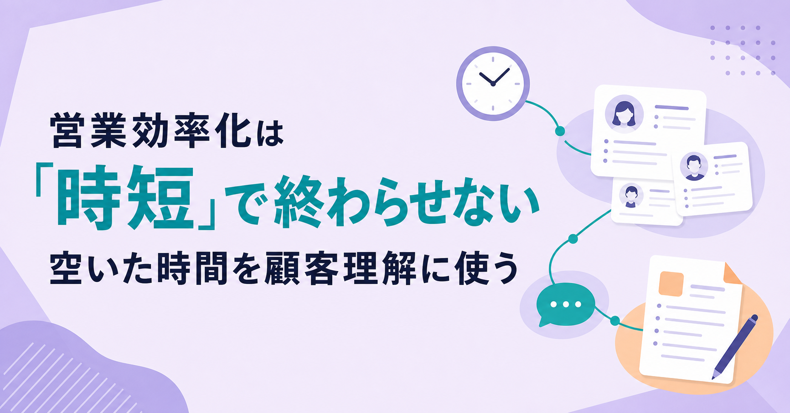

営業効率化は「時短」で終わらせない。空いた時間を顧客理解に使う営業組織のつくり方

みなさんこんにちは、Valorize AI代表の鈴木創也です。
メールの下書き、議事録の整理、企業情報の収集、CRMやSFAへの入力が速くなっても、商談の質が変わらないことがあります。顧客ごとの準備が浅いままなら、提案は一般論に戻り、商談後の判断も急ぎ足になります。
効率化で生まれた時間は、どこへ行ったのでしょうか。追加の社内連絡や新しい事務作業に吸収されれば、営業活動の中身は変わりにくくなります。
営業効率化は、定型作業を減らす施策であると同時に、顧客を理解し、提案を組み立て、次の行動を決める時間を確保するための設計です。削減した時間の使い道まで決めることで、初めて施策の効果を確かめられます。
時短だけでは営業成果との距離が縮まらない
生成AIや営業支援ツールを使う企業が増えても、生産性の向上と収益への貢献は同じ指標ではありません。PwC JapanのB2Bセールス業務への生成AI活用調査では、売上高500億円以上の日本企業でB2Bセールスに携わる部長職以上487名の回答のうち、68％がAIを導入済みでした。導入済み企業の半数以上が生産性向上を実感した一方、収益への貢献を実感した企業は29％でした。
この差だけで、AI活用の成否を説明することはできません。調査の設問も、企業ごとの導入方法も異なります。ただし、作業が速くなったことを、そのまま事業成果と扱えない点は明確です。
削減された時間が、優先度の低い業務へ移れば、営業活動は変わりにくくなります。逆に、重点顧客の準備、商談中の確認、商談後の判断へ使われれば、顧客固有の状況を提案へ反映しやすくなります。時間削減は成果そのものではなく、営業活動を変えるための余地です。
顧客理解に時間を使う理由
買い手は、一般的な製品情報や業界の解説を、検索や生成AIを通じて集めやすくなっています。営業担当者に求められるのは、同じ情報を繰り返すことだけではありません。
HubSpot Japanの「日本の営業に関する意識・実態調査2026」では、買い手の81.2％が、営業担当者だからこそ提供できる価値に期待していると回答しました。個別事情を踏まえた提案、潜在ニーズの把握、共感や気配りが上位に挙がっています。この調査はオンラインの自己申告式調査であり、営業担当者の関与が受注率を高めることを示すものではありません。
それでも、顧客固有の優先順位、制約、関係者、比較基準は、一般情報だけでは把握できません。営業活動で時間を使う先は、情報を増やすことではなく、こうした事情を確かめ、提案を変えるための仕事です。
ここでいう顧客理解は、長時間の会話を求めることではありません。誰に、どの場面で、どこまで準備と対話を深めるかを選ぶことです。すべての顧客へ同じ時間を使う必要はありません。
再投資先を四つの営業活動に分ける
空いた時間を「顧客との対話に使う」とだけ決めても、日々の業務では後回しになりがちです。実際の行動へ落とすには、準備、対話、判断、改善に分けて扱います。
商談前の準備
準備では、重点顧客の事業、直近の変化、関係者、過去のやり取りを確認します。目的は情報を集めることではなく、商談で何を確かめるかを決めることです。
例えば、新規開拓であれば、公開情報から企業の変化を整理し、その変化が自社の支援領域とどのように関わるかを仮説にします。既存顧客であれば、利用状況や過去の相談内容を踏まえ、追加提案の前に確認すべき条件を絞ります。
商談中の対話
対話では、顧客の優先順位、社内の制約、比較基準、意思決定の背景を確かめます。説明する時間を増やすことが目的ではありません。準備した仮説を顧客の言葉で修正し、次の提案に必要な判断材料を得ることが目的です。
顧客が抱える課題を一つ聞いただけで、提案の方向を決めることはできません。その課題が今期の優先事項なのか、誰が判断に関わるのか、解決しない場合に何が起きるのかまで確かめると、次の行動を選びやすくなります。
商談後の判断
商談後には、議事録を残すだけでなく、提案内容、次の接触、対応の優先順位を見直します。情報が増えても、判断が変わらなければ、記録は営業活動に使われません。
顧客が重視する条件が分かったなら、提案の順序を変える必要があるかもしれません。関係者が追加で必要になったなら、次回までに誰へ確認するかを決めます。停滞の理由が明らかになったなら、追いかけ続けるか、いったん保留にするかも判断します。
チームの改善
改善では、重要商談へのフィードバック、ロールプレイ、失注や停滞の振り返りに時間を使います。Salesforceの「営業最新事情」第7版 日本語版では、46％が商談内容へのフィードバックをほとんど受けず、47％が顧客対応前に十分なロールプレイの機会がないと回答しています。この国際調査の結果だけで、日本のすべての営業組織を説明することはできません。ただし、準備と対話の質を個人だけに任せず、チームで見直す余地があることは示しています。
HubSpot Japanの調査でも、生成AIの利用で生まれた時間の使い道として、提案の質を高めるための思考が43.9％、業務の振り返りや改善が34.0％、顧客との対話や関係構築が32.3％でした。休憩や労働時間の短縮に使う回答も38.2％あります。営業成果を目的とする施策と、労働環境を改善する施策は、同じ指標で評価すべきではありません。
再投資を現場任せにしない
削減した時間の使い方を各担当者の工夫に任せると、急な依頼、追加の報告、接触数の上積みに吸収されやすくなります。営業組織では、少なくとも次の三点を運用に組み込みます。
- 対象となる場面：初回接触前、重要商談前、商談直後、停滞案件の見直しなど、追加の準備と判断を行う場面を決めます。
- 期待する行動：顧客固有の変化を一つ確認する、仮説と質問を用意する、商談後に提案の変更点を決めるなど、実行を確かめられる形にします。
- 会議と1on1の問い：送信数や商談数に加え、何を把握したために提案や次の行動を変えたのかを確認します。
例えば、週次会議で「重点顧客に時間を使う」と決めるだけでは、運用は変わりません。どの案件を重点とするのか、商談前に何を確認するのか、商談後に何を決めるのかを、担当者と支援者が共有します。
HubSpot Japanの同調査では、生成AIを週1回以上使う回答者の割合は、組織からの支援がない場合の35.6％に対し、業務プロセスへ組み込んだ組織では74.8％でした。この数値は利用頻度との関連を示すものであり、組み込みだけで成果が出るという因果を示すものではありません。それでも、個人利用の可否だけで終わらせず、使う場面と確認する行動を決める必要があります。
効果は五段階で確かめる
営業効率化を売上だけで評価すると、どこに問題があるのかを切り分けにくくなります。施策の前後で、次の順に変化を確認します。
- 時間削減：定型作業にかかる時間が減ったか。
- 行動変化：準備、対話、判断、改善に使う時間と行動が増えたか。
- 顧客理解：優先順位、制約、関係者、比較基準を把握できたか。
- 案件成果：提案内容、次の行動、案件の進め方に変化があったか。
- 事業成果：商談化率、受注率、継続率、売上に変化が見られるか。
前の段階を確認すれば、作業時間が減らなかったのか、減った時間を使えていないのか、顧客理解が提案へ反映されていないのかを区別できます。単月の売上だけで結論を急ぐより、対象チーム、案件条件、観察期間をそろえて検証するほうが、次の改善につながります。
準備を仕組みで支え、判断と対話に時間を残す
企業情報の収集、過去履歴の整理、提案仮説の下書きは、AIで処理しやすい準備業務です。一方で、ターゲットの優先順位、提案の最終判断、顧客との対話は、人が担います。
経済産業省と総務省のAI事業者ガイドライン第1.2版は、AIの用途とリスクに応じた管理を示しています。営業でAIを使う場合も、顧客情報の扱い、出力の正確性、対外送信前の確認を業務手順に含めます。効率化を急ぐために、確認すべき判断まで省くことはできません。
Valorize AIが提供するSales Triggerは、人がターゲットを設計した後の企業リスト作成、個社調査、提案のたたき台、アプローチ準備を半自動化するAIエージェントサービスです。企業理解と提案準備にかかる作業を整え、営業担当者が顧客ごとの判断と対話に集中できる状態を支援します。送信前には人が内容を確認する運用を前提とします。
営業効率化で最初に決めるのは、新しいツールの名前ではありません。減らす作業、その時間を使う場面、期待する行動、確認する指標を一枚に整理することです。そこまで決めることで、時間削減を営業活動の変化につなげるために何を決めるべきかが明確になります。